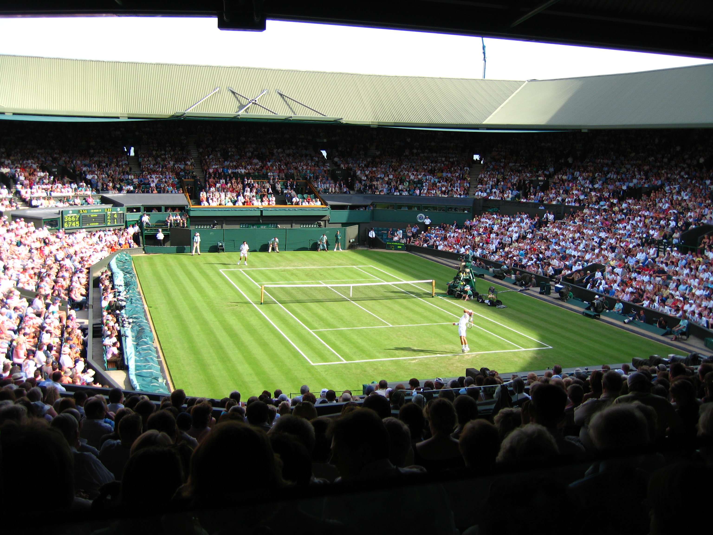
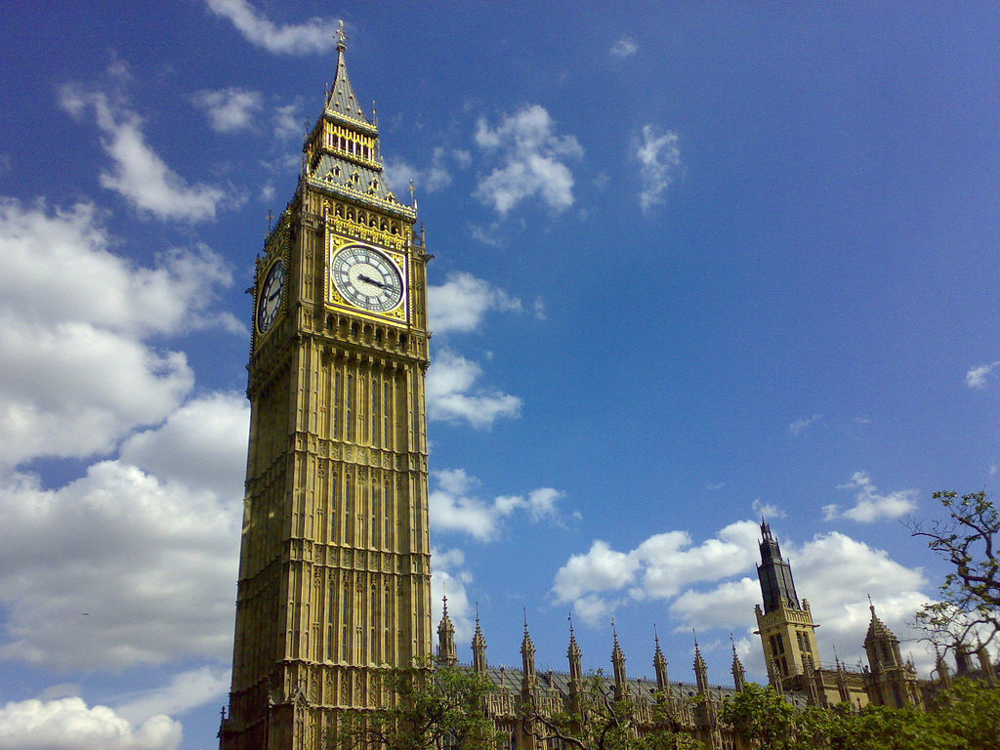
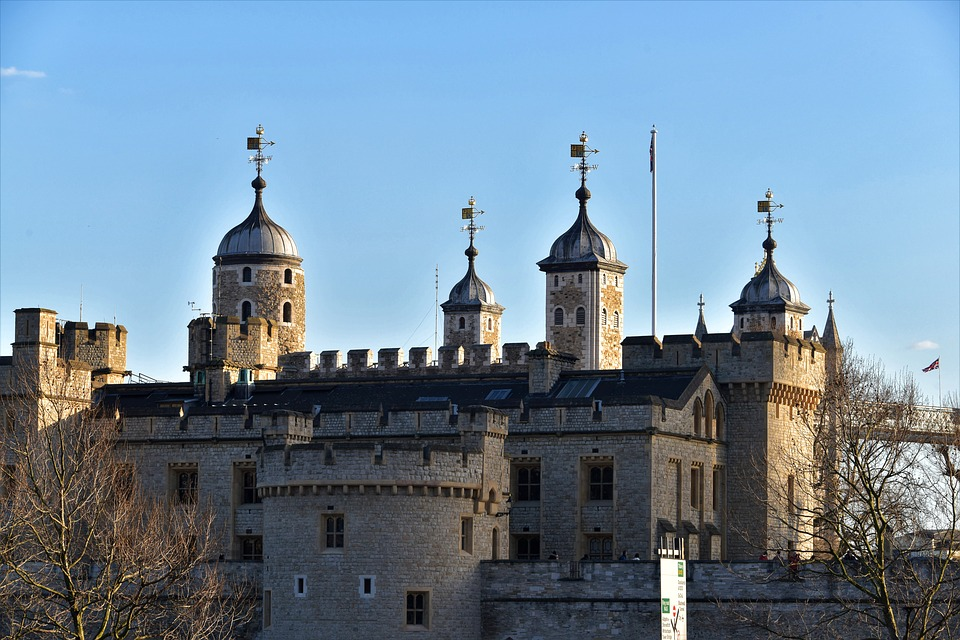
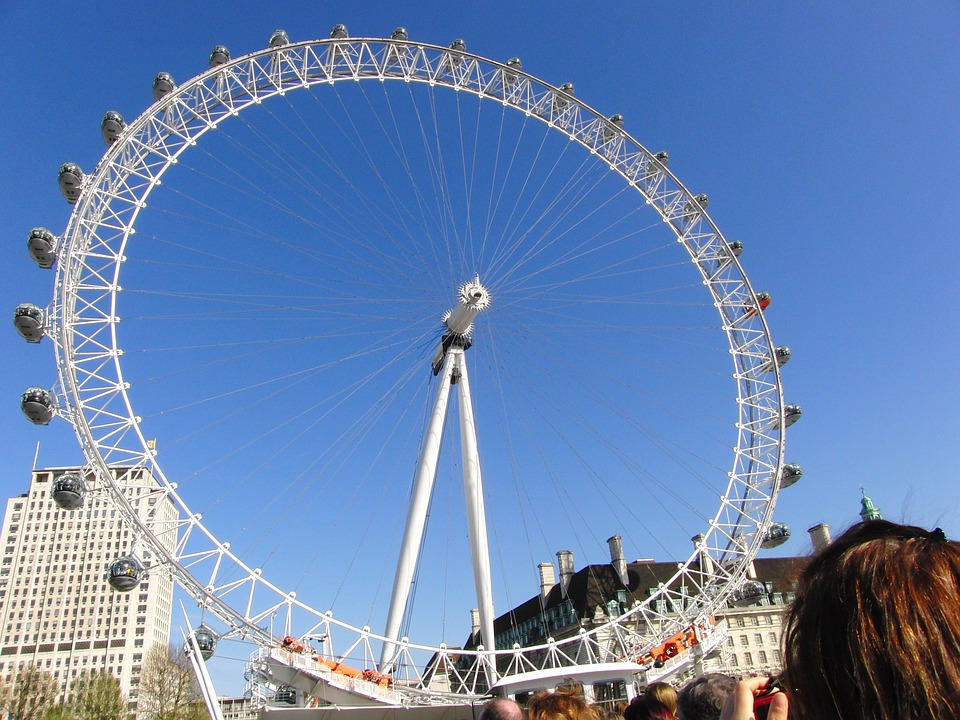

観光スポット
バッキンガム宮殿

真っ赤な制服と黒い帽子の兵隊さんの衛兵交代を見ることがで きます。
女王がスコットランドに滞在する夏の間だけ宮殿が一般公開されます。
レンブラント、ルーベンスの絵画や素晴らしい磁器、家具など実際の王宮の豪華な装飾が堪能できます。
ウィンブルドン

テニスの四大大会のうちのひとつのウィンブルドン選手権が開催されることで有名です。
その近くにあるウィンブルドン・テニス博物館でテニスの展示も見ることができます。
ビックベン

ロンドンのテムズ川のほとりのウェストミンスター宮殿にある時計台で、正式名称をエリザベスタワーといいます。
鐘の鳴る４面時計としてはイギリス最大です。
ロンドン塔

世界文化遺産に登録されているロンドン塔は、位の高い人間を幽閉する監獄として使われたことで有名です。
ロンドン塔には世界最大級と言われる「渡りカラス」が伝統的に飼育されています。
ロンドンアイ

2008年までは世界最大の観覧車で、ギネスブックにも登録されました。
自転車のホイールのような外輪の外側に、ゴンドラがついている特殊な形をしています。
大英博物館

世界で最大級の博物館で、世界中の美術品や書籍、考古学的遺物や標本、硬貨や工芸品など約800万点が収蔵されています.
ロゼッタストーンやパルテノン神殿の彫刻が飾られています。